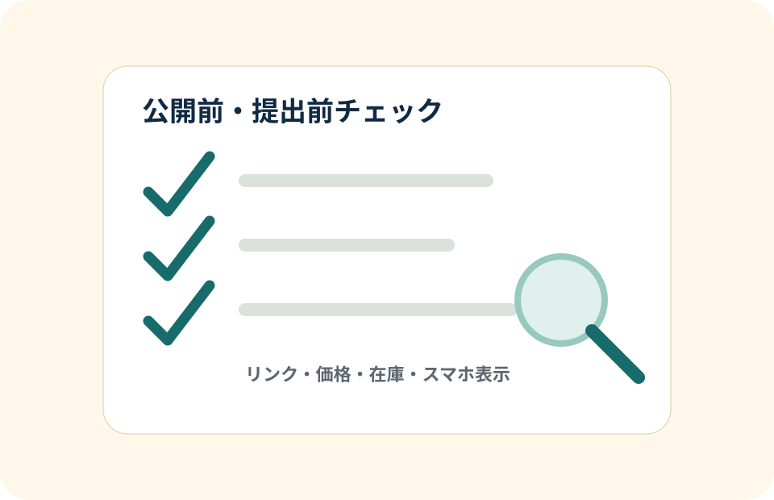

3ケース共通
公開前・提出前チェックリスト
EC運営、Web更新、SNS投稿、広報補助でミスを減らすための確認表です。
共通公開前チェック項目

| 項目 | 確認内容 | 主な対象 | 確認者 | 確認日 |
|---|---|---|---|---|
| 誤字脱字 | 見出し、本文、表、CTA、メール文面を声に出して確認 | 全ページ | 本人 | 提出前 |
| 表記ゆれ | 商品名、サービス名、税込表記、曜日、単位、応募先名を統一 | ケース本文、概要1枚 | 本人 | 提出前 |
| リンク | トップ、3ケース、AIレポート、公開前チェック、概要1枚への導線を確認 | ナビ、CTA | 本人 | 提出前 |
| 価格 | 商品ページ、バナー、メルマガ、表の価格が一致しているか確認 | ECケース | 本人 | 提出前 |
| 在庫 | 再入荷、在庫僅少、販売終了などの表現が矛盾しないか確認 | ECケース | 本人 | 提出前 |
| 日付 | 公開日、キャンペーン期間、セール終了日、報告期限を確認 | 配信文、カレンダー | 本人 | 提出前 |
| 画像 | 著作権リスクのある実写素材を使わず、CSS図形・SVG・プレースホルダーで表現 | バナー、ビジュアル | 本人 | 提出前 |
| スマホ表示 | 360px、768px、1024px、1440pxで文字切れ、横スクロール、表の見え方を確認 | 全ページ | 本人 | 提出前 |
| 応募先との関連性 | 和雑貨EC運営、Case 02・広報補助、Case 03運用で見るべき制作物が明確か確認 | トップ、概要1枚 | 本人 | 提出前 |
| AI補助と本人確認の分担が説明できるか | 案出し・整理・比較に使い、最終判断と事実確認は自分で行う説明になっているか確認 | AIレポート、各ケース下部 | 本人 | 提出前 |
| 公開URL | 提出URLがプレビュー用URLではなく、外部から見られる公開URLになっているか確認 | 概要1枚、応募時URL | 本人 | 提出前 |
| URL表記 | URL欄が応募先からアクセスできる公開URLになっているか確認 | 概要1枚、README | 本人 | 提出前 |
| 氏名表記 | 氏名欄が仮文言ではなく、応募書類と同じ表記または提出用の表記になっているか確認 | 概要1枚 | 本人 | 提出前 |
| 内部用ページ | 面接台本など内部用ページへの公開導線が、ナビ、トップ、READMEから出ていないか確認 | トップ、README、ナビ | 本人 | 提出前 |
| 架空案件・架空数値 | 自主制作・架空案件であり、集計表の数値が実在企業の実績ではないと注記しているか確認 | 各ケース、集計表 | 本人 | 提出前 |
提出直前の確認
- トップのファーストビューで中心メッセージが伝わる
- 3ケースそれぞれの応募種別で見るべき制作物が明確
- 公開URLが応募先から実際にアクセスできるURLになっている
- URL欄が提出用の公開URLになっている
- 氏名が仮文言ではなく、履歴書・職務経歴書など応募書類と一致している
- 面接台本など内部用ページへ、トップページやグローバルナビから公開導線が出ていない
- 応募先名を前面に出しすぎず、3ケースの見どころとして整理されている
- 架空案件・架空数値であり、実在企業の実績ではないことに注記がある
- Case 03が plus closet のファッションECケースになっている
- 旧テーマ文言が残っていない
- 全リンクが動く
- 高度な開発力を大きく見せず、運用補助に必要な正確性を見せている
- 採用担当が5分で全体像を理解できる